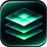

Traders for Traders.
The Open Trading Project
Built by traders. For traders. Free for everyone.
A community-driven initiative by TradeZoro
Professional-grade, within reach
We are a community-driven initiative to put professional-grade trading tools, market data, analytics and education within reach of every trader, not just the ones who can pay for a desk.
Just traders building better tools for traders
No unnecessary paywalls
The core stays free: the charts, indicators and the Mentis course. A few live data feeds cost us real money to run, and we say so plainly.
No gatekeeping
No hidden tiers of knowledge. The lessons, the tools and the manual are written for anyone to pick up.
No artificial limits
We do not cap the basics to push you to something else. Where a limit exists, it is a real cost, not a nudge.
Traders build it
Requests, bug reports and scripts from traders shape what gets built next.
The core stays free
Real tools you can open today. Each card goes to its page.

ZoroCharts
Professional charting in your browser, with order flow, replay and paper trading.

Market Stats
How often gaps, ranges and levels played out, with sample sizes.

Liquidity Map
Where resting orders sit around the market.

ZoroTide
Net call premium against net put premium since the open.
Creator Hub
Start a trading community with your own indicators, courses and Discord.
Screener
Movers, gaps and 52-week highs in one list.
178 indicators
The full indicator library for ZoroCharts, each with setup notes.

64 Mentis chapters
The written ICT and SMT curriculum, free with an account.
Zscript
Write your own indicators, with the full manual and a 12-lesson course.
Some live market data, such as order-book depth, costs us money to run, so a few of those feeds are not part of the free core. Education only. Not financial advice.
Help shape it
You do not need permission. Pick whichever fits you.
Suggest a feature
Post it on the suggestions page, or in the feature-requests forum on Discord.
Report a bug
Use the bug-reports forum on our Discord. Screenshots help.
Share your scripts
Write it in Zscript and put it in the Script Library.
Create content
Run your own community, indicators and courses on Creator Hub.
Teach
Turn what you know into lessons in Mentis, for traders who are learning.
Built in public
Open here means open to everyone: you can see what we are building and what we shipped.